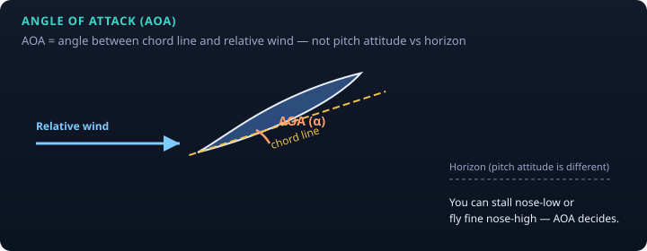
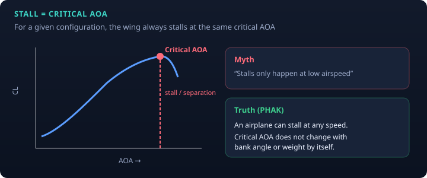
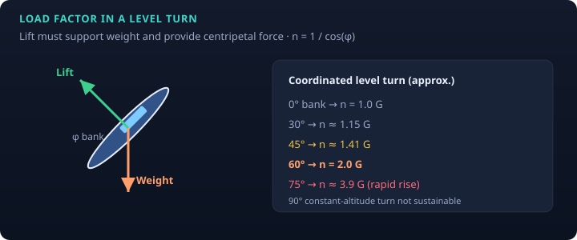
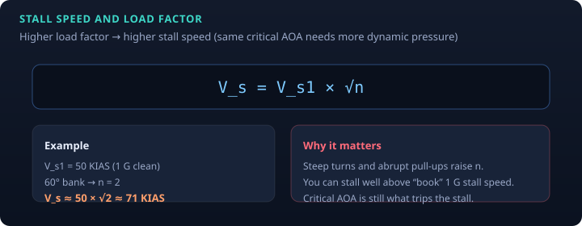

PHAK Ch. 5 · study note
Chapter 5 moves from “what is lift?” to how the wing is operated: angle of attack, stalls, and how banked turns and pull-ups raise load factor and stall speed. Interactive practice: AOA & Load Factor Lab.
Angle of attack (AOA) is the angle between the wing’s chord line and the relative wind. It is not pitch attitude relative to the horizon.

As AOA increases, lift coefficient rises—until the airflow can no longer stay attached over the upper surface. That AOA is the critical angle of attack. Beyond it: separation, large loss of lift, a stall.
PHAK emphasis (knowledge-test and safety critical):

An uncoordinated stall can develop into a spin: both wings stalled, one more deeply, with autorotation. Recovery knowledge matters even though spin training is not required for the private pilot certificate.
Load factor \(n\) is the ratio of the aerodynamic load on the airplane to its weight (often spoken in “Gs”). In straight-and-level unaccelerated flight, \(n = 1\). In a coordinated level turn, lift must both support weight and provide the horizontal force that turns the airplane path:
n = 1 / cos(φ) (φ = bank angle)

To fly at the same critical AOA under a higher load factor, you need more dynamic pressure—so indicated stall speed rises:
V_s = V_s1 × √n
\(V_{s1}\) is the 1 G stall speed in that configuration. At 60° bank (\(n = 2\)): stall speed ≈ \(1.414 × V_{s1}\).

Design limit load factors and maneuvering speed (VA) protect the structure when you make full control inputs. Below VA, the wing should stall before limit load is exceeded (in the design model). Above VA, abrupt full deflection can overstress before stall. Weight changes VA (higher weight → higher VA in the usual published family of speeds—check your AFM).
Figures are original educational SVGs, not FAA handbook scans.